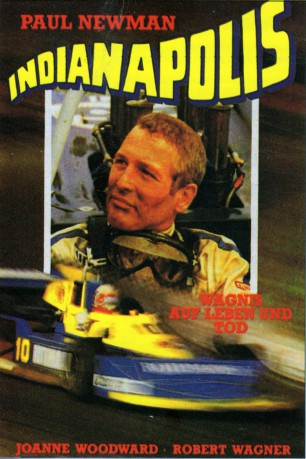
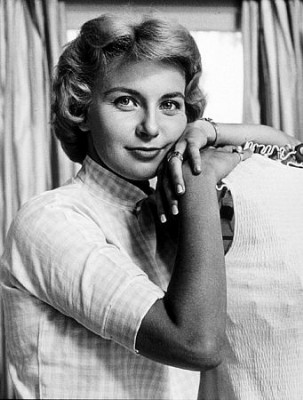

#8781 Indianapolis
Alternativ: Winning
 
 IMDB-Wertung: 6.1 / 10
IMDB-Wertung: 6.1 / 10  Metascore: 0
Metascore: 0 
Frank Capua hat nichts als seine PS-Karriere im Kopf. Als es mit der bergab geht, wendet sich seine Frau Elora Franks Rivalen Luther Erding zu. Beim 500-Meilen-Rennen von Indianapolis geht es zwischen den Erzfeinden ums Ganze, beruflich wie privat.
Jahr: 1969
Dauer: 117 Minuten
FSK: 12
Land: USA Studio: Universal PicturesTonspuren: DD2.0 - ,
Untertitel:
Auflösung: 1080p (1920x816) Größe: 5509 MB
Genre: Action, Drama, Sport
Regisseur: James Goldstone
Drehbuch: Howard Rodman
Soundtrack: Dave Grusin
Darsteller:
 Paul Newman als Capua
Paul Newman als Capua-  Joanne Woodward als Elora
 Robert Wagner als Erding
Robert Wagner als Erding Richard Thomas als Charley
Richard Thomas als Charley David Sheiner als Crawford
David Sheiner als Crawford Clu Gulager als Larry
Clu Gulager als Larry Harry Basch als The Stranger (uncredited)
Harry Basch als The Stranger (uncredited)- Allen Emerson als Desk Clerk (uncredited)
- Paulene Myers als Cleaning Woman (uncredited)
- Robert Quarry als Sam Jagin (uncredited)
- Robert Shayne als Well-Wisher at Indy Victory (uncredited)
- Maxine Stuart als Miss Redburne's Mother (uncredited)
- Barry Ford als Bottineau
- Karen Arthur als Miss Dairy Queen
- Bobby Unser als Himself
- Tony Hulman als Himself
- Ray Ballard als Trombone Player (uncredited)
- John Bryant als Well-Wisher at Indy Victory (uncredited)
- Marianna Case als Motorcycle Girl (uncredited)
- Toni Clayton als The Girl (uncredited)
- Timothy Galbraith als Driver No. 2 (uncredited)
- Bobby Grim als Bobby Grim (uncredited)
- Dan Gurney als Dan Gurney (uncredited)
- Mimi Littlejohn als Indianapolis Queen (uncredited)
- George Mason als Indianapolis Policeman (uncredited)
- Roger McCluskey als Roger McCluskey (uncredited)
- Carolyn McNichol als Party Girl (uncredited)
- Stephen Mitchell als Mechanic at Riverside (uncredited)
- Lou Palmer als Indianapolis Interviewer (uncredited)
- Alma Platt als Mrs. Eshovo (uncredited)
- Jay Reynolds als Indianapolis Interviewer (uncredited)
- Charles Seel als Eshovo (uncredited)
- Pat Vidan als Starter (uncredited)
- Bruce Walkup als Driver No. 1 (uncredited)
- Eileen Wesson als Miss Redburne (uncredited)
Datei: X:\1969\Indianapolis (1969, FSK12, 1920x816).mkv seit 30.04.2018
Festplatte: HD 1900-1970
 Es gibt insgesamt 22 Filme in der Gruppe '1969'
Es gibt insgesamt 22 Filme in der Gruppe '1969'